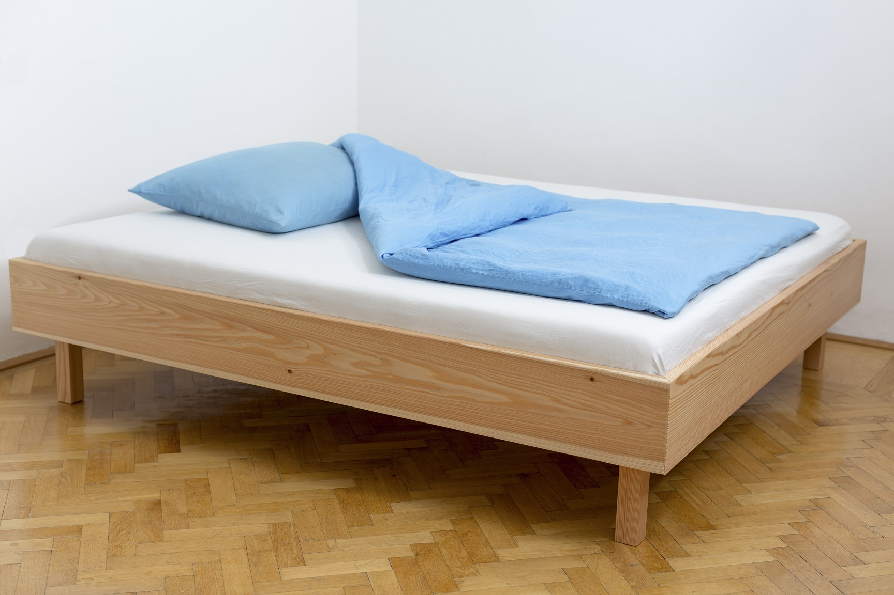
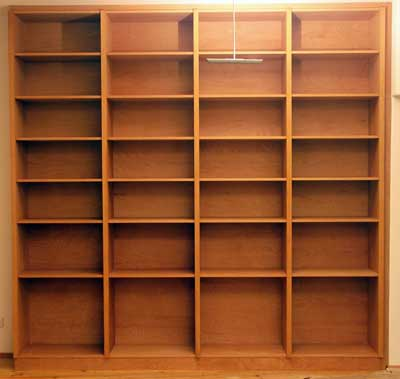
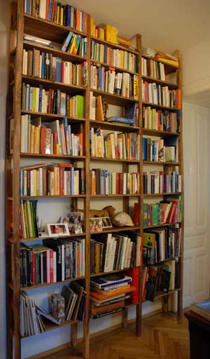
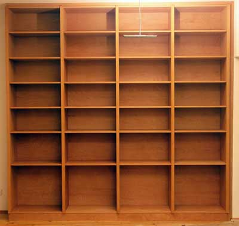
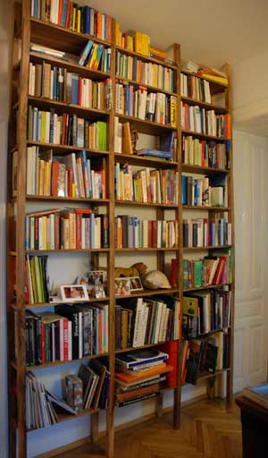

Werk-Stadt
Es ist wichtig Möbel so zu bauen, dass sie die Bedürfnisse des Benutzers befriedigen. Der Nutzen definiert die Größe und die Funktion bestimmt das Design. Eine Kombination von schönem Material und bester Verarbeitung bewirkt die jeweils besondere Ausstrahlung des Tisches, des Bettes, des Stuhles, der Kommode... Deshalb setzte ich mir in meiner Arbeit das Ziel, den funktionellen Anspruch eines Möbels mit den persönlichen Wünschen des Benutzers so zu gestalten, dass der ästhetische Ausdruck und das künstlerische Handwerk bestmöglich zur Geltung kommen. Ich sehe ein Möbel dann als perfekt geplant und gefertigt, wenn es an seinem Platz so steht, als wäre es immer schon dort gestanden. Es muss einladen, um benutzt zu werden. Es muss die Möglichkeit bieten, ein Teil vom eigenen Lebensraum zu werden, mit allen Schönheiten, auf die man stolz ist aber auch allen kleinen Unebenheiten, die es zu einem besonderen Einzelstück machen.
Das Bett
Es ist wichtig Möbel so zu bauen, dass sie die Bedürfnisse des Benutzers befriedigen. Der Nutzen definiert die Größe und die Funktion bestimmt das Design. Eine Kombination von schönem Material und bester Verarbeitung


Der Tisch
Es ist wichtig Möbel so zu bauen, dass sie die Bedürfnisse des Benutzers befriedigen. Der Nutzen definiert die Größe und die Funktion bestimmt das Design. Eine Kombination von schönem Material und bester Verarbeitung


Das Regal Es ist wichtig Möbel so zu bauen, dass sie die Bedürfnisse des Benutzers befriedigen. Der Nutzen definiert die Größe und die Funktion bestimmt das Design. Eine Kombination von schönem Material und bester Verarbeitung  

